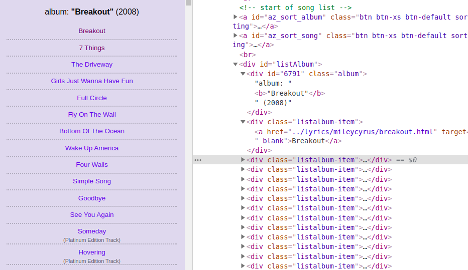
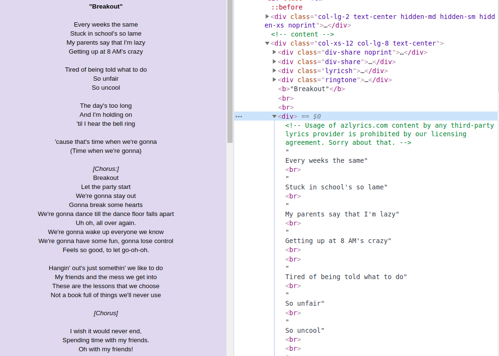

Data Scraping
Data Scraping (a.k.a web scraping) is a technique of extracting information from a website. Researchers take to it when a website doesn’t provide an API. Before parsing data from any site, you must read the rules for using the content presented on the site. There are no strict legal procedures, but sites can have their own policies and prohibit certain actions or block users who violate the rules. Moreover, if the server receives a number of requests that exceed its bandwidth, it will not be able to process them and will throw an error. Therefore, be careful and optimize your script before running it.
BeautifulSoup
We’ll use the most popular python libraries for data scraping and parsing: requests and BeautifulSoup.
The requests module allows us to make HTTP requests, which returns the content of the website as an HTML document.
BeautifulSoup is often used for parsing HTML documents. It converts the document into a tree of objects such as BeautifulSoup, tag, navigable string. BeautifulSoup object contains the nested html tags (body, div, p, etc) and we can find a tag with specific parameters that contains the information we are looking for.
You can find more details at requests and BeautifulSoup.
Specificity of AZlyrics
We will consider the lyrics scraping from AZlyrics as it provides a huge number of song lyrics of different artists and genres. AZlyrics does not allow the content to be used by other lyrics providers, so if you are a provider, do not run the script :)
Let’s go to an artist (for instance: Miley Cyrus) and look at how the information is structured on the website (right-click Inspect to find the code).
In Elements we can see a tree of html tags. Tags have properties and attributes. The most commonly used properties during the document parsing are class and id. The id value is unique for the entire document, but several components can have the same class name. These properties help us to find the certain tag. Using the text attribute we can get the text between the opening and closing tags. The attrs returns a dictionary of attributes that are inside the tag (for instance, a.attrs[‘href’] returns a link from <a> tag).

The page of the artist contains a list of his albums and songs, which are at the same level in the HTML document - song containers are not nested in the album container. Each container with class=”listalbum-item” contains the name of the songs and a link to the lyrics inside the <a> tag. We can follow the link and see that the text is in <div>, which hasn’t a specific class or id, but it’s involved in the parent container with class="col-xs-12 col-lg-8 text-center", so we can easily extract the text.

Data extraction
There are several steps we are going to follow.
Parse the content of the initial url
To scrape the data from the website we will use requests library with a link to the artist page.
url = 'https://www.azlyrics.com/m/mileycyrus.html'
page = requests.get(url, headers=headers)
soup = BeautifulSoup(page.content, 'html.parser')
Parse the content of the songs pages
Go through the list of song containers and construct the full link to the lyric, as the <a> contains relative link:
for s in soup.select('.listalbum-item'):
s_link = 'https://www.azlyrics.com' + s.a.get('href').replace('..', '')
Extract the content of the song page and parse the document:
s_page = requests.get(s_link, headers=headers)
page_content = BeautifulSoup(s_page.content, 'html.parser')
Select the container with the class=”col-xs-12.col-lg-8.text-center” and pull the lyrics:
s_text = page_content.select_one('.col-xs-12.col-lg-8.text-center').find('div', class_=None)
Get album information, including its title, year of realise (check if there is an album, because some releases do not involved into any album):
lyrics = page_content.select_one('.col-xs-12.col-lg-8.text-center').find('div', class_=None)
album = page_content.select_one('.songinalbum_title')
album_details = None
album_title = None
if album != None:
album_details = album.text
album_title = album.b.text
Add a dictionary containing the song title, its lyrics and album information to dataset:
data.append({
'album_info': album_details,
'album_title': album_title,
'lyrics': lyrics.text,
'song_title': s.a.text
})
Multiple requests can overload the server and it can affect its functioning. Moreover, requests to the server with the same IP address can cause a ban of the user, as it may be recognized as suspicious actions.
We can solve it by using a custom user agent and adding a delay in every loop: time.sleep(15).
Now we have a list of lyrics, which can be saved in any format that fit the data processing task.
The code is available on GitHub. Feel free to open pull requests.